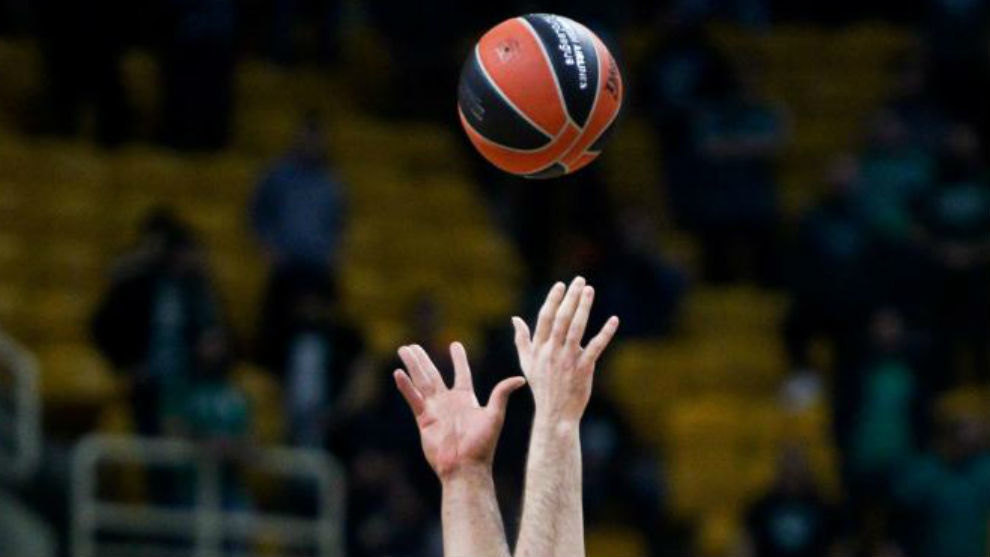
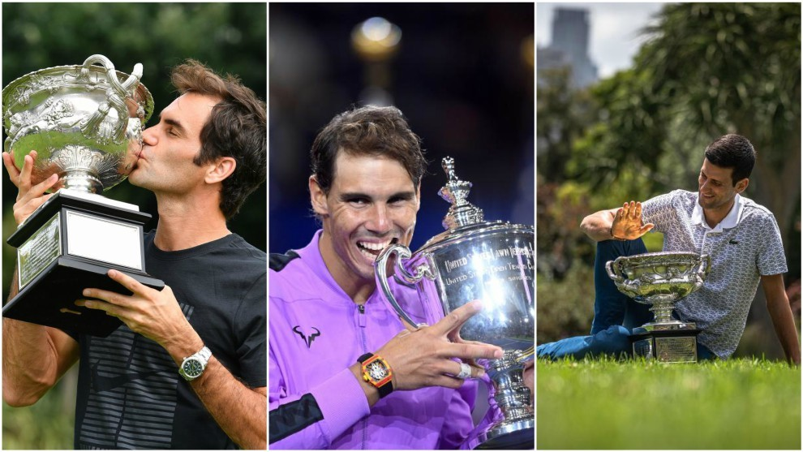
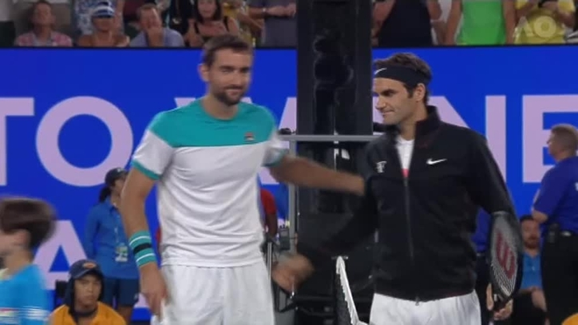
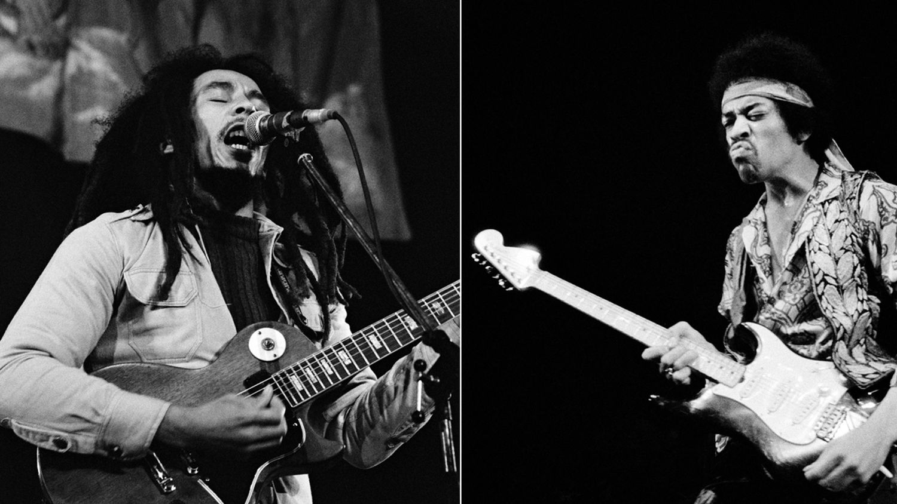
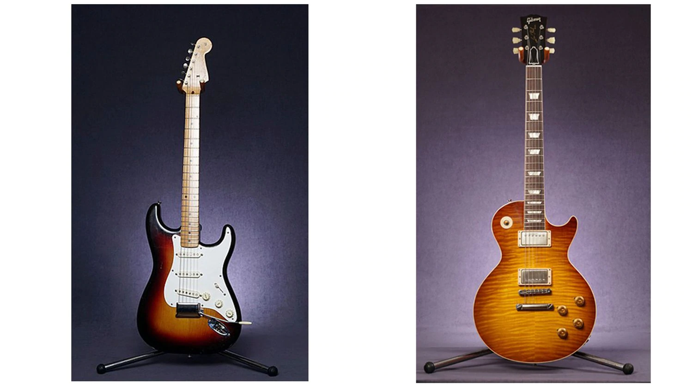
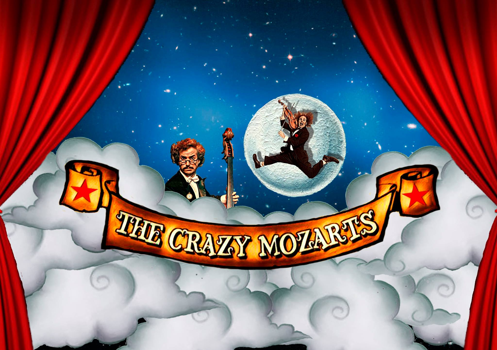
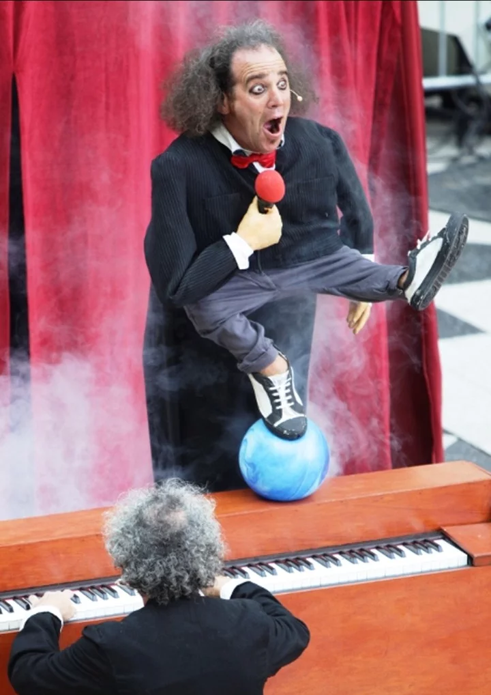
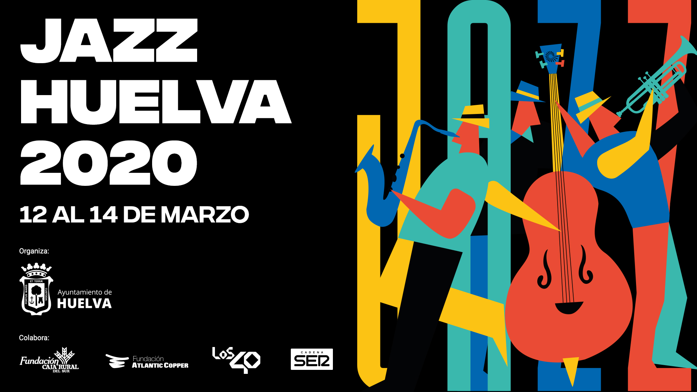

El fútbol valenciano, como el resto de la sociedad, está padeciendo esta extraordinaria situación donde se intenta frenar que el coronavirus siga propagándose, y como han exigido las autoridades, lo mejor para detener al Covid-19 es el #QuédateEnCasa.
Jugadores y entrenadores de todas las categorías han mostrado en las redes sociales en las últimas horas cómo están pasando estas horas, y animan a que la gente sea responsable y siga las indicaciones del Ministerio de Salud.
MAXI GÓMEZ, MARIO GASPAR, JOSÉ HERNÁNDEZ, JONY ÑIGUEZ, ABRAHAM, SON ALGUNOS DE LOS JUGADORES QUE HAN ENVIADO ESTOS MENSAJES EN SUS REDES SOCIALES
Futbolistas de la élite como el delantero del Valencia, Maxi Gómez, también ha querido animar a todos en esta compleja situación:
Desde el extranjero también están viviendo esta situación futbolistas y entrenadores valencianos como Fran Constancio. Él está en el Norhtampton Town FC de la “Segunda B” inglesa:
La Euroliga también se suspende: el baloncesto mundial, paralizado

Como se intuía, y debido al coronavirus, la Euroliga ha anunciado este jueves la suspensión de la jornada 29 de la fase regular que debía disputarse en estos dos días. Tenía previsto para este jueves la disputa de cuatro encuentros en Moscú, Estambul, Tel Aviv y Madrid y de otros cuatro para este viernes tras el aplazamiento del Armani Milán-Olympiacos.
La Euroliga ha tenido en cuenta "la consideración de la Organización Mundial de la Salud (OMS) de que el brote es una pandemia, los mayores riesgos para todos los participantes en los partidos, las crecientes restricciones de movimiento en Europa , la gran cantidad de interrupciones de viajes que causan la imposibilidad de llegar a ciertos destinos y las diferentes recomendaciones de las autoridades sanitarias que pueden ser útiles para prevenir la propagación del virus".
Todo ello hace imposible mantener la regularidad de las competiciones, y para preservar la salud y la seguridad de los participantes y aficionados y, de acuerdo con los clubes, la Euroliga ha tomado la decisión de suspender hasta nuevo aviso temporalmente la máxima competición europea, así como la Eurocup y el torneo júnior Adidas Next Generation.
La Euroliga era la última gran competición de baloncesto que mantenía actividad. Con su decisión, las de muchas Ligas nacionales, las competiciones FIBA y después de la tomada por la NBA en la madrugada de este jueves, el baloncesto mundial queda paralizado sin fecha de regreso.
El virus que puede condicionar la historia del tenis

Federer, Nadal y Djokovic, con sus últimos trofeos de 'Grand Slam'
El coronavirus no sólo ha puesto en jaque al deporte mundial, suspendido por el COVID-19, sino que puede condicionar la historia dentro de algunas disciplinas como el tenis.
Roger Federer, Rafael Nadal y Novak Djokovic mantienen una pelea por ser el mejor jugador de la historia, que en gran parte se mide por el número de títulos de 'Grand Slam', y el desarrollo del resto de temporada ya está condicionado por la enfermedad.
En Indian Wells, el primero de los siete torneos que la ATP ha cancelado, estaba en juego el liderato en el ranking de Masters 1.000 y en la clasificación mundial. En la pelea estaban Djokovic y Nadal.
El primero mantiene una renta de 370 puntos respecto a su más directo rival en la lista de entradas mientras que es el manacorí el líder en entorchados de TMS con 35, uno más que el serbio.
En los despachos que tiene el circuito masculino en Florida, Londres y Montecarlo se siguen manteniendo reuniones para saber qué pasa con los puntos que los jugadores defendían del año pasado y que no podrán sumar al desaparecer los torneos, en este caso Indian Wells, Miami, Marrakech, Houston, Montecarlo, Barcelona y Budapest.
De esa decisión dependerá también si a 'Nole' se le siguen sumando semanas al frente del tour. Su objetivo es superar las 310 de dominación de Federer, algo que podría conseguir de manera matemática a principios del mes de octubre.

Federer tumba a Cilic en una espectacular final
Roger es el que más 'majors' posee con 20, seguido de Nadal, con 19, y Djokovic, 17. El suizo, que se realizó una artroscopia en su rodilla derecha el pasado 19 de febrero y no volverá a la competición oficial hasta el 21 de junio en la hierba de Halle, es el menos perjudicado por el parón del tenis.
Si se congelan los puntos, no perdería posiciones a la espera de, si a partir de mayo, se pueden jugar los Masters 1.000 de Madrid y de Roma y Roland Garros.
Música
El algoritmo que acabó con la música pop
Damien Riehl y Noah Rubin crean un programa que ha generado casi 69.000 millones de melodías. Lo más parecido a la biblioteca definitiva de la música pop, aquella que contiene todas las partituras posibles, incluso las que están aún por crear.
Ya lo apuntó en su día el crítico británico Simon Reynolds; el reciclaje se ha apoderado del pop desde los años ochenta. La voracidad capitalista acelera el uso –y abuso– de modas, estilos y canciones añejas. Se difuminan las fronteras que nos permiten dictaminar hasta qué punto estamos ante un ejercicio de despiadado latrocinio melódico o, por el contrario, ante una elogiosa revisitación.
Beyoncé, Avril Lavigne, Green Day, Alicia Keys, Oasis, Ariana Grande, Kanye West, Lana del Rey, Radiohead, Coldplay... han pasado por ahí. Litigios millonarios por una secuencia de acordes que remite, a veces de forma cristalina, a una melodía compuesta hace décadas. Existe, apuntan los médicos, el llamado "plagio inconsciente", inducido por un misterioso proceso llamado criptomnesia que hace referencia a recuerdo pasado, que creímos sepultado, pero que regresa sin que seamos conscientes.
Pero echar la culpa a la criptomnesia del incremento en el número de causas judiciales por plagio sería, cuando menos, injusto. La posibilidad de acceder a teras y teras de archivos de sonido en cuestión de segundos convierten la historia de la música en un escaparate global. Así es como los parentescos melódicos, difícilmente comparables en tiempos analógicos, saltan ahora a la palestra con inusitada frecuencia.
Sobrevuela, en todo caso, una pregunta largamente postergada que, junto a la creciente hiperconectividad, podría explicar ese incremento en demandas por plagio: ¿está agotada la música pop? Según el músico, programador y abogado Damien Riehl, la respuesta –con matices diversos– es que va camino de estarlo. "La cuestión es que el número de melodías es finito", sentenciaba el susodicho en una reciente charla TEDx en Minneapolis. Para redondear el atrevimiento, Riehl tuvo a bien irrumpir en el escenario con un disco duro: "Todas las melodías posibles están en este disco duro y por lo tanto tenemos el copyright sobre ellas", dijo.
Fender contra Gibson, la verdadera batalla del rock
El sonido eléctrico del siglo XX fue definido por las guitarras de dos fábricas de EE UU

A la izquierda, Bob Marley con una Gibson Les Paul en el Roskilde Festival 1978, en Dinamarca. A la derecha, Jimi Hendrix, con una Fender Stratocaster en Copenhague en 1970.
Olviden la rivalidad entre Beatles y Rolling Stones: la máxima competición pop durante la segunda mitad del siglo XX enfrentó a dos constructores de guitarras. Leo Fender (California, 1909-1991) era sencillamente un inventor obsesivo, carente de sensibilidad para la música. Les Paul (Wisconsin, 1915- Nueva York, 2009) ejercía de showman: combinaba su faceta de virtuoso con una vocación de manitas. Un libro reciente, El nacimiento del ruido (Neo Sounds), de Ian S. Port, detalla cómo ambos hombres posibilitaron la expansión creativa del rock, aunque —conservadores en gustos— eso fuera lo último que desearan.
El autor de El nacimiento del ruido despeja las nieblas que rodean a estos primeros pasos. Así, Les Paul se atribuía el papel de pionero en 1940 con El Tronco, un tablón de madera de pino al que añadió un mástil, cuerdas y una pastilla. Funcionaba, pero también estuvo a punto de electrocutarle; cuando presentó su invento en la Gibson Guitar Corporation, se rieron de él. En verdad, la gran aportación técnica de Les Paul fue la grabación multipista, base de todo el arte moderno de hacer discos.
En 1949, su amigo Bing Crosby le regaló un magnetofón Ampex que, una vez modificado, le permitía sincronizar distintas capas de sonido (“pistas”). Su guitarra, a veces acelerada o alterada, evocaba un mundo raro, entre fino y reluciente. Con la voz (y la guitarra) de su esposa, Mary Ford, consiguieron números uno como How High The Moon (1951) o Vaya con Dios (1952). Convertido en figura popular, Les Paul volvió a las oficinas de Gibson y llegó a un acuerdo. Cedería su nombre a su nueva guitarra de cuerpo sólido, a cambio de una regalía por cada instrumento vendido. Es decir, la Gibson Les Paul no era obra de su publicista, que apenas aportó pequeños detalles.

A la izquerda, la Fender Stratocaster. A la derecha, una Gibson Les Paul.
Pocos instrumentos tan compactos y tan hermosos de acabado como una Gibson Les Paul. Pero tenía inconvenientes: su peso —más de cinco kilos— y su alto precio. Así que Leo Fender prefirió competir en manejabilidad, resistencia y una modernidad que se trasladaba al diseño, sensual y futurista, como indicaba el nombre de sus principales modelos: Telecaster (1950) y Stratocaster (1954). Mientras una Les Paul sugería tronío, una Fender transmitía informalidad californiana.
En realidad, la Fender era deudora de una guitarra esbozada por el músico country Merle Travis y materializada por el artesano Paul Bigsby (que poco después crearía el brazo de vibrato). Pero nadie puede discutir la inventiva de Leo Fender: a partir de 1952, logró que multitud de contrabajistas se pasaran al bajo eléctrico con su soberbio Precision Bass. Sus amplificadores Fender se convirtieron en marca de referencia. Y, aunque quede fuera del tema de hoy, Leo Fender tuvo notable responsabilidad en la elaboración del muy legendario piano eléctrico Fender Rhodes.
Resumiendo: las Fender batieron a las demás marcas. Pensadas originalmente para músicos vaqueros en la onda de Buck Owens, se acoplaron al rock & roll (Buddy Holly) y al surf (de Dick Dale a los Beach Boys). Pero la risa va por barrios: a mediados de los sesenta, tras la adopción del blues urbano por Eric Clapton, Mike Bloomfield y otros guitarristas blancos, se revalorizó la Gibson Les Paul, con su gemido denso y su tono carnoso. De hecho, se podría afirmar que la Fender fue salvada por el prodigioso Jimi Hendrix que, usando abundantes pedales de efectos, creó un arcoíris de sonidos que Leo Fender nunca hubiera podido imaginar.
The Crazy Mozarts: payasos para hacer divertida la música clásica
Con instrumentos no convencionales, fusionan circo y música culta. Giraron por el mundo y ahora va los sábados en El Galpón de Guevara.

Cuando se habla de música clásica, está en el imaginario de todos algo serio, formal, y para algunos que desconocen, hasta aburrido. Si se habla de circo, sin dudas vienen a la mente payasos, mucho color y rutinas alocadas. The Crazy Mozarts fusiona estos dos universos, que a simple vista poco tienen en común. "Hoy en día la riqueza está en como mezclás los ingredientes", explica Sebastián Guz, clown de renombre internacional con más de 20 años de trayectoria en festivales de todo el mundo.
El guión sigue a dos payasos que quieren realizar un concierto de música clásica. Uno intenta que todo salga perfecto mientras que el otro no para de meterse en líos. Sin embargo, ante la adversidad, estos hermanos podrán ingeniárselas para que todo salga lo mejor posible.
Los dos protagonistas hablan sobre la importancia de la amistad y cómo superar adversidades. Se hace hincapié en la relación entre los personaje y cómo con paciencia pueden salir a flote.
Los protagonistas de The Crazy Mozarts, haciendo un número de malabares.
A diferencia del violín, la trompeta, la flauta y otros instrumentos, generalmente presentes en la música clásica, los protagonistas tocarán una batería con pelotas de rebote, los platillos con pelotitas de ping pong, un saxofón que hace levitar un planeta, y violines hechos con antorchas.
"Es un concierto hecho por payasos, donde se tocan instrumentos inverosímiles, no convencionales. Por lo general cuando se habla de música clásica se habla de gente seria, por como están vestidos, muy elegantes, la compostura, y justamente el payaso es una figura muy rica para romper e ir a lo opuesto", dice Guz.
Entre piezas creadas por Mozart y algunas canciones escritas por Santiago Blomberg, se pueden apreciar típicos números circenses cómo una rutina de malabares con fuego o lanzamiento de pelotitas con la boca.
"Los payasos no sólo hacen reír, a veces detrás de sus bromas se esconden grandes verdades. El mundo necesita más humanidad y los payasos son un buen reflejo de nuestra existencia", dice Guz.

The Crazy Mozarts estrenó en Francia e hizo gira por toda Europa.
Este género musical ha sido utilizado como recurso por varios dibujitos animados, entre ellos Tom y Jerry. "Es un buen imaginario para la comedia. La música y el despliegue de instrumentos es algo que atrae mucho a los chicos", explica el intérprete de uno de los personajes principales.
Inspirada en las películas de Charles Chaplin y las aventuras de Mr. Bean, la obra no tiene texto. Para el actor y director ese es el mayor atractivo ya que la convierte en una historia de idioma universal. No importa la cultura o la edad, todos se ríen de las mismas cosas.
Desde que se estrenó en Francia en 2017, la compañía MundoCostrini, conformada por Romina Krause, Guz y Blomberg, llevó su show a varios lugares de Europa como Suiza, Alemania, Holanda, Portugal y también Israel.
Varias estrellas mundiales del jazz actuarán en Huelva a partir de este jueves
La capital onubense estrena esta semana el Festival Jazz Huelva 2020, promovido por el Ayuntamiento de Huelva, a través de la Concejalía de Cultura.Un evento musical que convertirá a la ciudad, del 12 al 14 de marzo, en una referencia internacional del jazz con la llegada de grandes maestros del género, como Benny Golson, Tom Harrell, The Cookers, Billy Harper, Donald Harrison, Jeremy Pelt, Billy Hart o Cecil McBee.
“Durante tres días, y en programas dobles, Huelva se posicionará entre los más grandes Festivales de Jazz de España, y podremos disfrutar en el Gran Teatro con la música de seis grupos que encarnan a la perfección el ayer y el hoy de la música improvisada”, ha destacado el teniente alcalde de Cultura, Daniel Mantero. “Una oferta construida sobre el equilibrio buscado expresamente entre la aportación norteamericana y la europea, con presencia destacada del jazz nacional y, por supuesto, el local”, ha subrayado el edil.
En palabras de Mantero “se trata de una nueva apuesta del Ayuntamiento que llega con la intención de convertirse en una cita obligada cada año para los aficionados onubenses al jazz y en un atractivo más para recibir nuevos visitantes de diferentes puntos de España y Portugal”.

Poster del Festival de Jazz de Huelva
El Festival arrancará el jueves, 12 de marzo, a las 19.00 horas, con un pasacalles por las calles del centro a cargo de La Choquera Jazz Band Dixieland. Posteriormente, a las 21.00 horas, comenzarán los conciertos en el Gran Teatro con la actuación del Trío Jorge Pardo, Charles Benavent y Tino di Gerlado, al que seguirá uno de los grandes trompetistas del jazz mundial, Tom Harrell Trip.